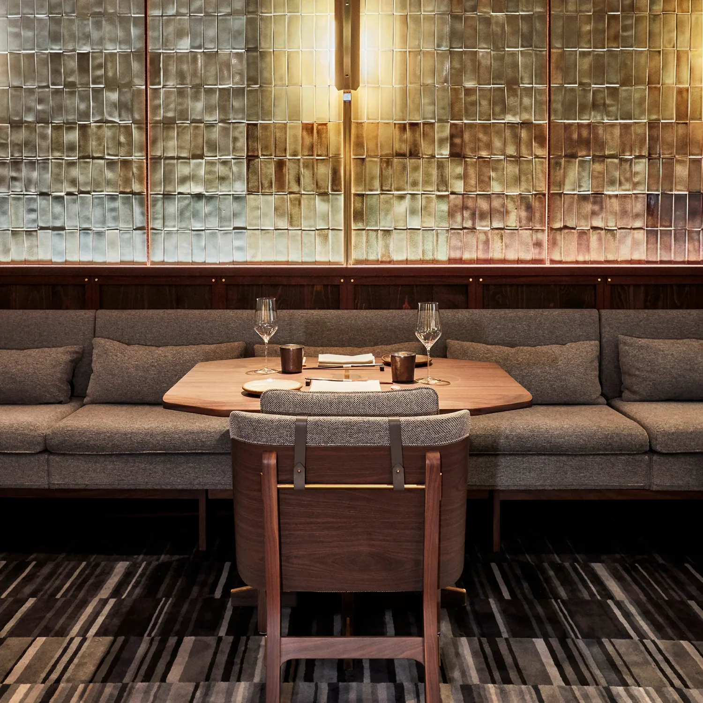
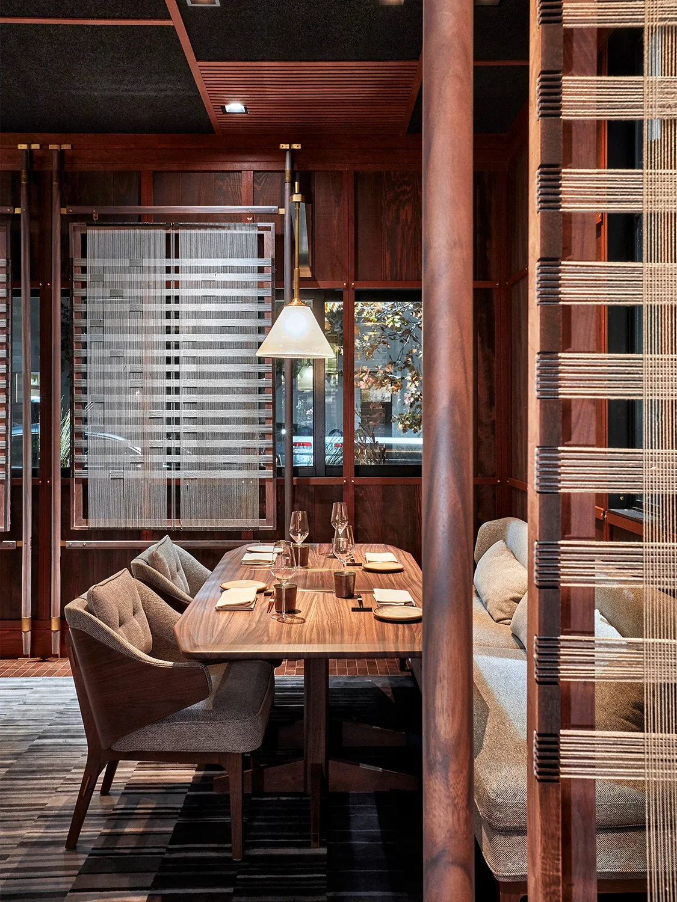

The recipient of a James Beard Design Award for Best Restaurant Design, this modern Californian Ryokan features strict gridded wall panels and ceiling beams, and shades over the windows woven from threads—a subtle nod to the establishment’s name. All of the furniture is designed bespoke by AvroKO and Stellar Works for SingleThread, and is now available as a permanent offering within the collaborative Brightliner Collection.
Spread across the restaurant are the Sloane Dining Armchairs, whose textured cushions nestle within curved wood panels that form continuous seat backs and arms. Extending this design laterally results in custom banquette modules that either remain straight, or curve around corners to form booths. The natural walnut Lenox Dining Tables have notched corners and beveled edges, plus base connections that are elegantly expressed on their surfaces. Created in both square and rectangular versions, the tables are also now part of the Brightliner Collection.
Among other details found through the restaurant include a custom wall-mounted wine rack—critical in this oenophilic region—and a glass terrarium that serves as both a centerpiece and a workspace for Katina to build nightly flower displays. All of these elements are poetic nods to the couple’s love for farming, gardening, and molecular gastronomy. Each personal touch is woven into a visual tapestry that forms the setting for a truly special culinary experience for guests. The Michelin Guide has awarded it three stars, so you don’t just have to take our word for it.
Design studio AvroKO devised the restaurant interiors as a workshop, showcasing Kyle, Katina, and their team’s craft in a studio-style space that reveals clever nods to this concept as the service unfolds. For instance, metal-framed panels slide open to fully reveal the kitchen to the dining room. Silverware for each course is stored in one of seven hand-numbered drawers within a custom service station, while on the shelves above, the seemingly decorative ceramic vessels are utilized by the chef at a specific moment in the night.
